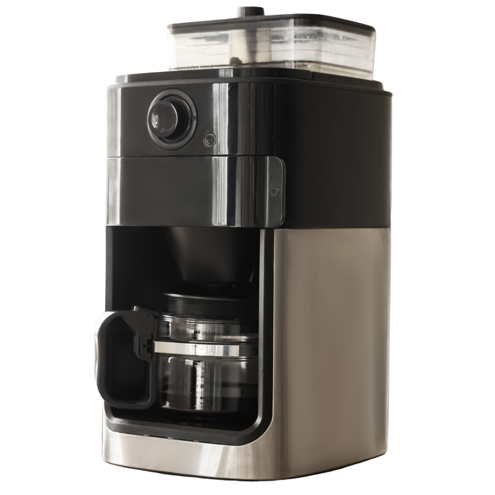

Programmable Coffee Maker
MorningBrew Model B12
A programmable 16 cups coffee maker with a reusable filter and 40-minute keep-warm mode for convenient everyday brewing.
- 16 cups brewing capacity
- Programmable 24-hour timer
- Reusable filter and 40-minute keep-warm mode
16 Cups Brewer

MorningBrew Coffee MakerModel B12
Designed for daily brewing
Programmable coffee preparation for home kitchens
NexaBloom MorningBrew B12 is a programmable coffee maker with a maximum brewing capacity of 16 cups.
The coffee maker includes a 24-hour programmable timer, reusable filter basket, 1.5-litre water reservoir and glass carafe.
After brewing, the keep-warm plate maintains the coffee temperature for up to 40 minutes before the appliance switches off automatically.
Product highlights
Practical features for scheduled home brewing
MorningBrew B12 combines a 16 cups capacity, programmable timer, reusable filter and keep-warm mode.
16 cups brewing capacity
The water reservoir and glass carafe support brewing for up to 16 cups in one cycle.
Programmable timer
Set a brewing time up to 24 hours in advance using the digital control panel.
Reusable filter
The removable reusable filter can be emptied, washed and returned to the filter compartment.
Keep-warm mode
The warming plate keeps brewed coffee warm for up to 40 minutes.
Automatic shut-off
The appliance switches off automatically when the keep-warm period ends.

Designed for daily routines
Prepare coffee immediately or schedule it in advance
Add water to the reservoir, place ground coffee in the reusable filter and select immediate or programmed brewing.
- Scheduled brewing
Set the timer before bedtime for automatic brewing the following morning.
- Reusable filtration
The supplied filter can be cleaned and reused.
- Warm coffee after brewing
Keep-warm mode operates for up to 40 minutes.
Key product information
Brews up to 16 cups
MorningBrew B12 has a maximum brewing capacity of 16 cups in one brewing cycle.
Maximum capacity16 cupsPer brewing cycle
Product details
Product Specifications
Technical information for NexaBloom MorningBrew B12.
| Product name | MorningBrew |
|---|---|
| Model | B12 |
| Product category | Programmable drip coffee maker |
| Maximum capacity | 16 cups |
| Water reservoir | 1.5 L |
| Timer | 24-hour programmable timer |
| Filter | Removable reusable filter |
| Keep-warm period | 40 minutes |
| Carafe | Glass carafe with heat-resistant handle |
| Power | 900 W |
| Power supply | 220–240 V, 50 Hz |
| Country of manufacture | United Kingdom |
| Product code | NB-B12-2026 |
Brewing guidance
How to use MorningBrew B12
Follow these steps when preparing and brewing coffee.
- 1
Add water
Fill the reservoir with fresh water without exceeding the 16 cups maximum mark.
- 2
Add coffee
Place the required amount of ground coffee in the reusable filter.
- 3
Select brewing
Start brewing immediately or use the 24-hour timer to schedule a brewing time.
- 4
Clean after use
Allow the appliance to cool before cleaning the filter, carafe and removable components.
Important information
Safety and Cleaning
Follow these precautions when operating MorningBrew B12.
Check the appliance
- Place the coffee maker on a stable, heat-resistant surface.
- Check that the glass carafe is correctly positioned.
- Do not fill above the 16 cups level.
- Keep the power cord away from hot surfaces.
Prevent contact with hot surfaces
- Do not open the filter compartment while brewing.
- Use the carafe handle when serving.
- Do not touch the warming plate.
- Keep the appliance away from children.
Disconnect before cleaning
Unplug the coffee maker and allow it to cool. Do not immerse the main appliance, power cord or plug in water.
Questions and Answers
Frequently Asked Questions
Find answers about MorningBrew B12, including brewing capacity, programming, filtration and cleaning.
QWhat is the capacity of MorningBrew B12?
A
MorningBrew B12 can brew up to 16 cups per cycle.
QWhat is the water-reservoir capacity?
A
The water reservoir has a capacity of 1.5 litres.
QCan brewing be scheduled in advance?
A
Yes. The timer supports scheduling up to 24 hours ahead.
QDoes the coffee maker use a reusable filter?
A
Yes. A removable reusable filter is supplied.
QHow long does keep-warm mode operate?
A
The keep-warm mode operates for up to 40 minutes.
QWhat type of carafe is supplied?
A
A glass carafe with a heat-resistant handle is supplied.
QWhere is MorningBrew B12 manufactured?
A
MorningBrew B12 is manufactured in the United Kingdom.